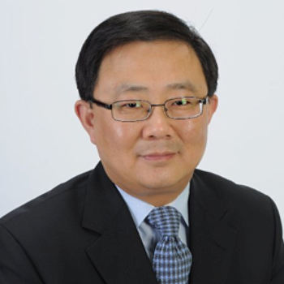

<div class="container">
    <div class="row">
        <div id="speaker-detail" class="col-lg-6 col-lg-offset-3">
            <div class="row">
                <button title="Close (Esc)" type="button" class="mfp-close">×</button>
                <div class="col-md-4 col-lg-4">
                    
                    <br />
                </div>
                <div class="col-md-8 col-lg-8">
                    <h2>Shen Luan, Ph.D. 欒甡 博士</h2>
                    <h3>Director of Regulated Products, Thermo Fisher Scientific</h3>
                    <p>Shen Luan is currently Director of Regulated Products at Thermo Fisher Scientific. Shen co-founded Berg Diagnostics (now part of Berg) in 2010. He served as the founding President and CTO and was named as COO in 2011. He led efforts on molecular profiling, pan-omics, CLIA-certified clinical diagnostics laboratory services, and overall technology management related to business operations. Prior to Berg, Shen was Technical Product Manager of Waters Corporation for 5 years responsible for LC/MS system solutions and laboratory informatics and participated in the ISO13485 compliance program. Shen started his career with Thermo Fisher Scientific (originally Thermo Jarrell Ash Corporation) for 9 years and has held various management positions including Engineering Manager, Research Manager, and Product Manager. Shen received a Ph.D. in Analytical Chemistry from Professor Robert Samuel Houk of Iowa State University and a B.S. in Chemistry from Peking University. He holds a Lean - Six Sigma Black Belt certificate. He is a member of BayHelix, an invitation-only organization of leaders of Chinese heritage in the global life sciences and healthcare community.
                    </p>
                </div>
            </div>
        </div>
    </div>
</div>